Давным-давно, задолго до появления современных школ и учебников, люди уже пытались понять, как устроен мир вокруг них. Они смотрели на здания, дороги, звёзды и даже на искусство — и замечали, что везде скрывается порядок и красота.
Так появилась геометрия — наука, которая родилась не из формул, а из наблюдений. Первые идеи геометрии появились ещё в Древнем Египте и Вавилоне. Землемеры измеряли поля после разливов Нила, строители возводили пирамиды, а художники искали идеальные пропорции, чтобы их работы выглядели гармонично.
Интересно, что геометрия долгое время была частью искусства и архитектуры, а не просто школьным предметом. Художники использовали её, даже не называя это математикой: они строили перспективу, подбирали пропорции лица, создавали иллюзию глубины на плоском холсте. И только позже люди поняли, что за этой красотой стоят точные законы. Например, почему дороги на картине “уходят вдаль”, почему одинаковые фигуры могут выглядеть больше или меньше, но оставаться одинаковыми по форме.
Так математика перестала быть просто вычислениями. Она стала языком, который описывает красоту, искусство и саму природу.
И если раньше тебе казалось, что геометрия — это только формулы и задачи, то этот сайт покажет другое: геометрия — это способ увидеть мир глазами художника и архитектора.
Геометрия — это язык
гармонии. Она помогает
художникам, архитекторам и
мастерам создавать красивые
картины, здания и орнаменты.
В ЖИВОПИСИ И АРХИТЕКТУРЕ
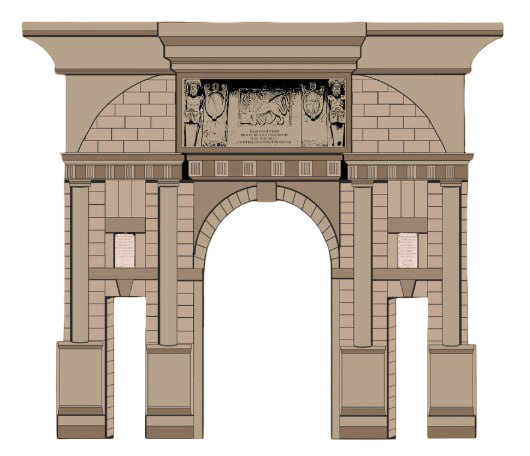
Изучай геометрию в живописи
и архитектуре, а после решай
интерактивные задания, чтобы
применять знания на практике!
Геометрия в живописи:
золотое сечение в геометрии и живописи
Исследуя композиционную структуру картин - шедевров мирового изобразительного искусства, искусствоведы обратили внимание на тот факт, что в пейзажных картинах широко используется закон золотого сечения.
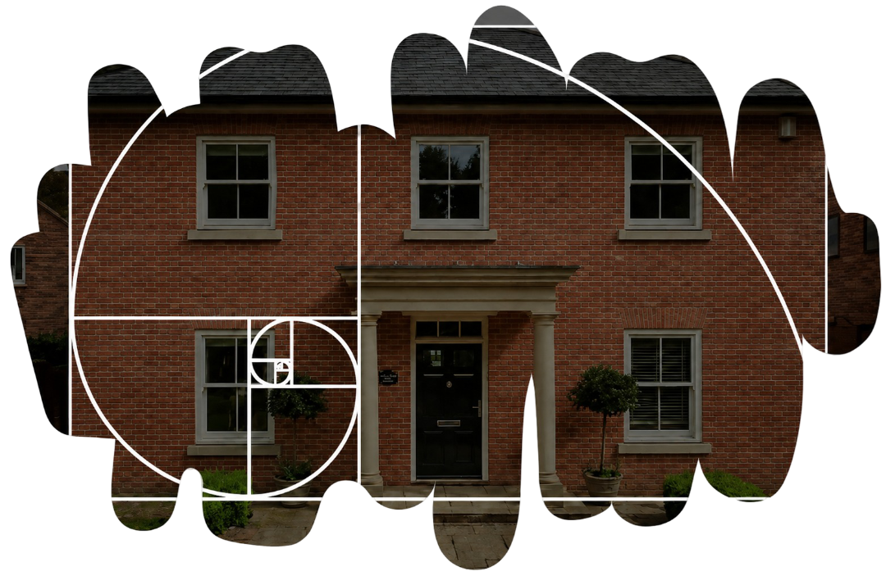
Золотое сечение — это математическое понятие, которое описывает гармоничное соотношение частей и целого. При таком делении большая часть относится к меньшей так же, как весь отрезок относится к большей части. Это соотношение приблизительно равно 1,618 и обозначается греческой буквой φ (читается как «ФИ»).
Если обозначить длину всего отрезка как a + b,
где a — большая часть, b — меньшая, то правило золотого сечения можно выразить уравнением:
Решая это уравнение, можно найти значение φ
Оно также может быть выражено формулой:
В эпоху Возрождения Леонардо да Винчи одним из первых художников стал наглядно показывать связь геометрии, пропорций и красоты. Он изучал строение человеческого тела и стремился доказать, что гармония в искусстве может строиться по математическим законам. В основе таких построений лежали простые фигуры — прежде всего квадрат и окружность. На их основе Леонардо показывал, как части тела соотносятся между собой и образуют единую гармоничную композицию. Подобный подход тесно связан с законом золотого сечения, который лежит в основе гармоничных пропорций многих произведений искусства. Примером использования этого принципа в живописи можно считать картину «Девушка с жемчужной серёжкой», где композиция выстроена в соответствии с законами визуального равновесия и пропорций.
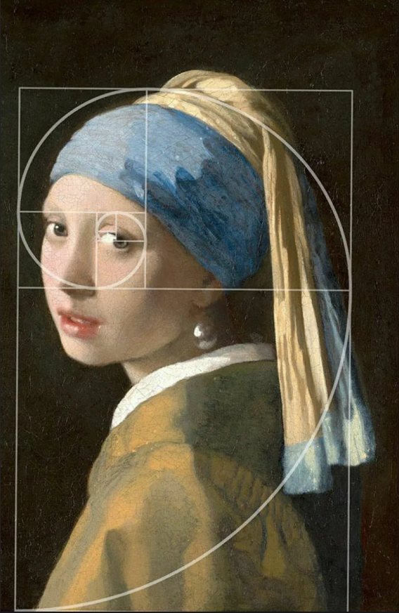
Картина Яна Вермеера «Девушка с жемчужной серёжкой»
Однако не все художники выражали золотое сечение через строгие геометрические формы. В отличие от Леонардо, который опирался на окружности и квадраты, многие мастера использовали этот принцип более свободно, интуитивно, без явных математических построений.
Примером картины, в которой используется закон золотого сечения, является
Картина И. И. Шишкина «Утро в сосновом лесу».
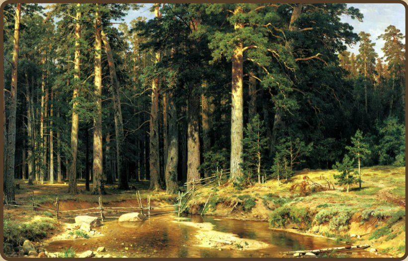
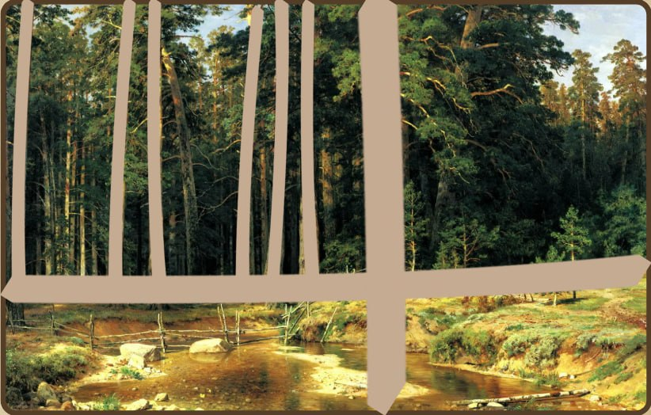
На этой знаменитой картине с очевидностью просматриваются мотивы золотого сечения. Ярко освещённая солнцем сосна, стоящая на первом плане, делит картину золотым сечением по вертикали. Справа от сосны — освещённый солнцем пригорок. Он делит картину золотым сечением по горизонтали. Слева от главной сосны находится много сосен — при желании можно с успехом продолжить деление золотым сечением по вертикали левой части картины. Наличие в картине ярких вертикалей и горизонталей, делящих её в отношении золотого сечения, придаёт ей характер уравновешенности и спокойствия в соответствии с замыслом художника.
Примеры картин, в которых используется закон золотого сечения:
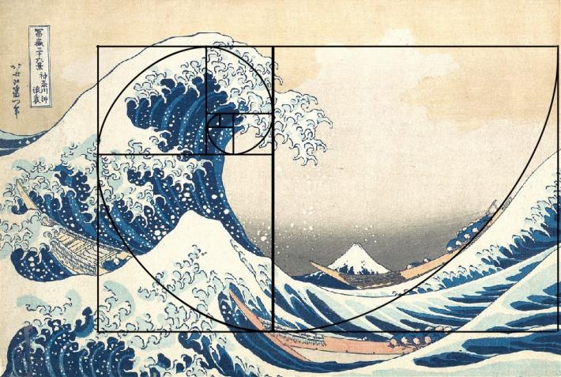
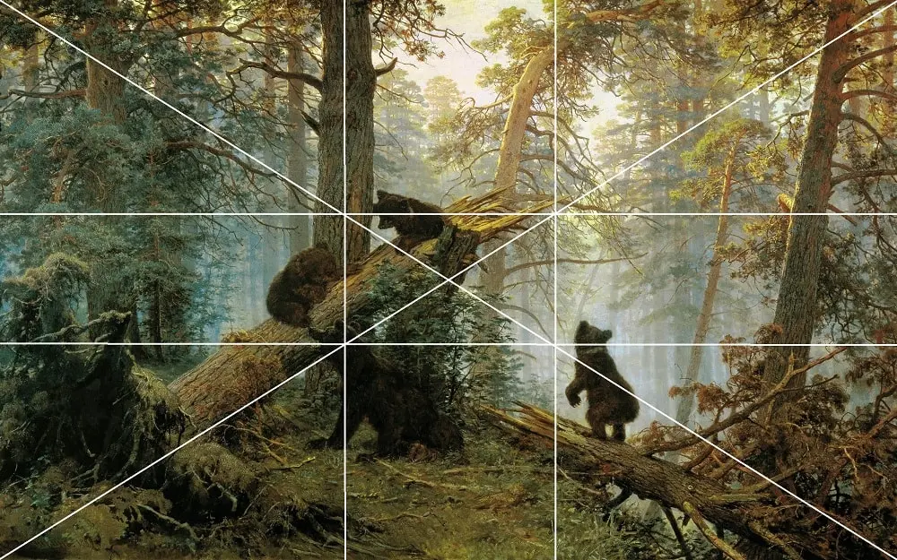
«Утро в сосновом лесу»
Знание законов золотого сечения или непрерывного деления, как его называют некоторые исследователи учения о пропорциях, помогают художнику творить осознанно и свободно. Используя закономерности золотого сечения, можно исследовать пропорциональную структуру любого художественного произведения, даже если оно создавалось на основе творческой интуиции. Эта сторона дела имеет немаловажное значение при изучении классического наследия и при искусствоведческом анализе произведений всех видов искусств.
Геометрия в живописи:
как художники создают гармонию
Живопись и геометрия связаны больше, чем кажется. Художники используют линии, треугольники, квадраты, круги, пропорции, подобия и перспективу, чтобы направлять взгляд зрителя и делать композицию гармоничной. Рассмотрим, как это проявляется на реальных картинах и пейзажах.
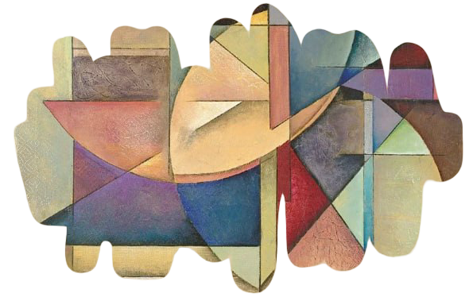
Полное название — «Портрет госпожи Лизы дель Джокондо» —
одно из самых известных произведений живописи.
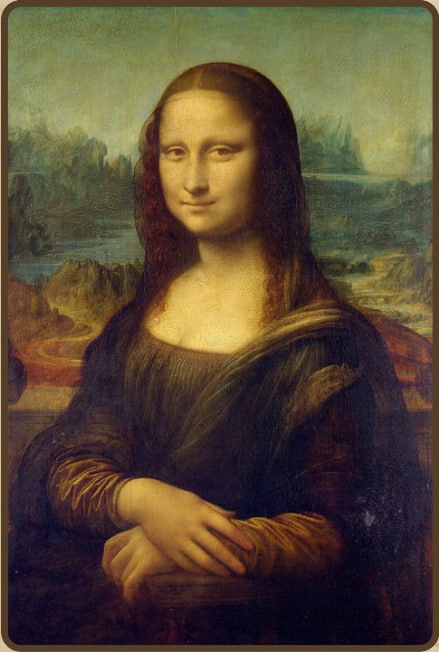
Посмотри на картину внимательно. Какая геометрическая фигура преобладает в композиции этой картины?
Какие бывают треугольники?
Треугольники бывают разными в зависимости от углов и сторон. Давай познакомимся с
основными видами:
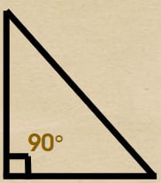
Прямоугольный треугольник —
один угол равен 90° (прямой угол).
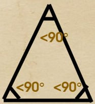
Остроугольный треугольник —
все углы меньше 90°.
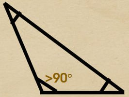
Тупоугольный треугольник —
один угол больше 90°.
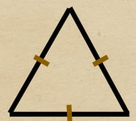
Равносторонний треугольник —
все стороны и углы равны.
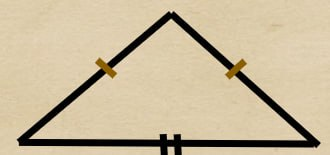
Равнобедренный треугольник —
две стороны равны, два угла при основании равны.
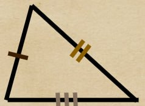
Разносторонний треугольник —
все стороны и углы разные.
Каждый треугольник можно изучать с помощью особых линий и сторон. Вот важные элементы, которые часто встречаются в геометрии и в живописи:
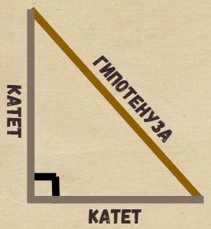
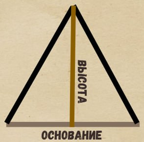
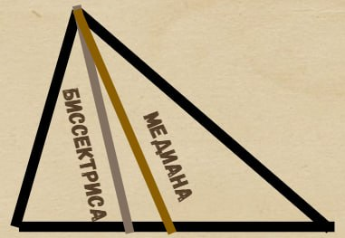
Катет — сторона прямоугольного треугольника, которая прилегает к прямому углу.
Гипотенуза — сторона прямоугольного треугольника, противоположная прямому углу.
Основание — сторона треугольника, которую часто выбирают как «низ» фигуры.
Высота — перпендикуляр из вершины к противоположной стороне.
Биссектриса — линия, делящая угол треугольника пополам.
Медиана — линия, соединяющая вершину с серединой противоположной стороны.
Если быть точнее, то композиция картины “Мона Лиза” построена на треугольниках, являющихся кусками правильного звездчатого пятиугольника. Зрачок левого глаза, через который проходит вертикальная ось полотна, находится на пересечении двух биссектрис верхнего золотого треугольника, которые с одной стороны, делят пополам углы при основании золотого треугольника, а с другой стороны, в точках пересечения с бедрами золотого треугольника делят их в пропорции золотого сечения.
Задача:
Дан треугольник:
Какой вид имеет данный треугольник?
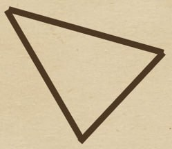
Задача:
Дан треугольник со сторонами: 3, 5, 7.
Какой вид имеет данный треугольник?
М.К. Эшер — один из самых необычных и выдающихся художников-графиков XX века, он часто использует в своих гравюрах приём подобия, создавая повторяющиеся и изменяющиеся по масштабу формы.
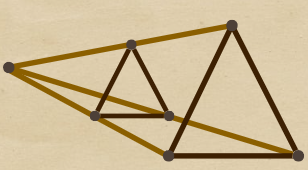
Подобие — это одно из основных понятий геометрии. Подобными называют фигуры, которые имеют одинаковую форму, но могут отличаться размером. У подобных фигур соответствующие углы равны, а соответствующие стороны пропорциональны.
Если фигуры подобны, то их соответствующие стороны пропорциональны:
AB / A₁B₁ = BC / B₁C₁ = AC / A₁C₁ = k,
где k — коэффициент подобия.
Коэффициент подобия показывает, во сколько раз одна фигура больше или меньше другой:
k = A₁B₁ / AB.
Если k > 1, фигура увеличилась.
Если k < 1, фигура уменьшилась.
Иными словами, если одну фигуру увеличить или уменьшить в несколько раз, её форма не изменится — изменится только размер. Именно поэтому подобие часто можно увидеть в живописи: художники повторяют похожие формы, меняют их масштаб, поворачивают и размещают в разных частях картины.
В математике подобные фигуры имеют равные углы, а их стороны пропорциональны. Это значит, что если одну фигуру увеличить или уменьшить в несколько раз, её форма не изменится, изменится только размер. На картинах Маурица Эшера хорошо видно геометрическое понятие подобия.
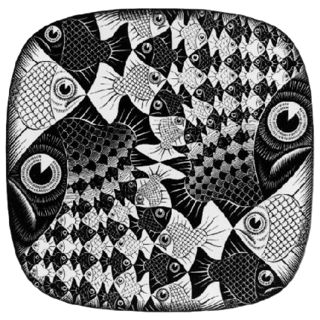
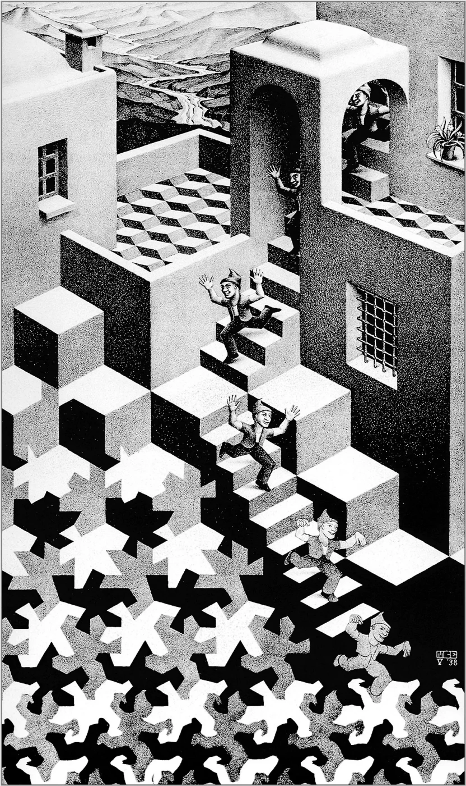
На первой картине рыбы имеют одинаковую форму, но отличаются размером: одни крупные, другие постепенно уменьшаются. Несмотря на изменение масштаба, каждая рыба остаётся похожей на остальные — сохраняются пропорции и общие очертания.
На второй картине фигуры людей, идущих по лестницам, повторяются множество раз. Они имеют одинаковую форму, но изображены в разных размерах: одни крупнее и ближе к зрителю, другие меньше и дальше. Несмотря на изменение масштаба, их пропорции остаются одинаковыми. Кроме того, сами ступени и архитектурные элементы здания тоже повторяют похожие формы в уменьшенном или изменённом виде, создавая эффект бесконечного повторения.
С подобием связана и перспектива. Когда художник изображает дорогу, комнату, коридор или ряд предметов, дальние объекты кажутся меньше, хотя в реальности они могут быть одинакового размера. Это можно объяснить с помощью подобных треугольников: лучи зрения от глаза к ближним и дальним объектам образуют похожие треугольники разного размера.
Поэтому в живописи ближние предметы изображаются крупнее, а дальние — меньше. Так на плоскости появляется ощущение глубины и пространства. Благодаря подобию и перспективе художник может сделать обычный плоский лист похожим на объёмный мир..
картина Альфреда Сислея
Альфред Сислей (1839–1899) — французский импрессионист, известный своими
пейзажами. Он мастерски передавал перспективу с помощью линий.
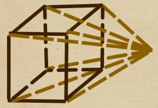
Перспектива — это способ изображения объёмных тел и построения иллюзии трёхмерного пространства на плоскости или другой поверхности, который учитывает их пространственную структуру и удалённость отдельных частей от наблюдателя.
В картине «Дорога Машины, Лувесьен» линии дороги и ряды деревьев сходятся к горизонту, а объекты уменьшаются по мере удаления. Это создаёт ощущение глубины и пространства на плоском холсте, делая пейзаж реалистичным и гармоничным.
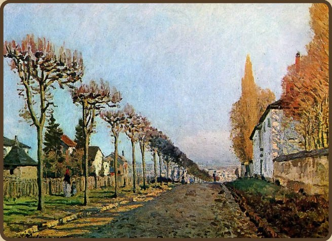
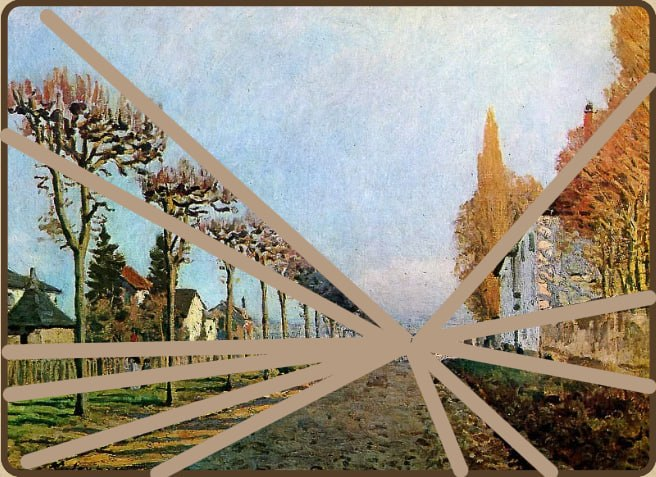
Картина Маурица Эшера «Галерея»
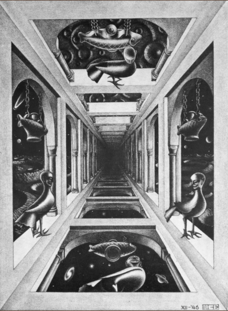
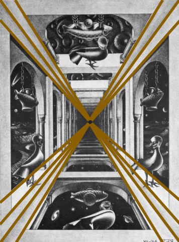